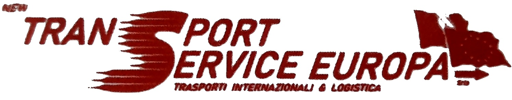

ESPRESSO
DEDICATO
Un mezzo, una missione. Per urgenze e consegne dedicate in Europa.
↗
Trasporto industriale, espresso, ADR e logistica. Dal Nord Italia a tutta Europa.
NON UN SEMPLICE TRASPORTATORE
Ogni carico ha una destinazione. Ogni cliente ha una priorità. La nostra è farli arrivare insieme.
NEW TRANSPORT SERVICE EUROPACollegamenti nazionali e internazionali, organizzati dall'ufficio traffico e seguiti con localizzazione GPS.
Un mezzo, una missione. Per urgenze e consegne dedicate in Europa.
↗Carichi completi e parziali, nazionali e internazionali.
↗Gestione dedicata per merci e trasporti che richiedono procedure specifiche.
↗Movimentazione e deposito merci dall'hub di Turate.
↗IL PROSSIMO VIAGGIO PUÒ PARTIRE DA QUI.
Via Guido Rossa 5
20815 Cogliate (MB)
Via Isonzo 32
22078 Turate (CO)